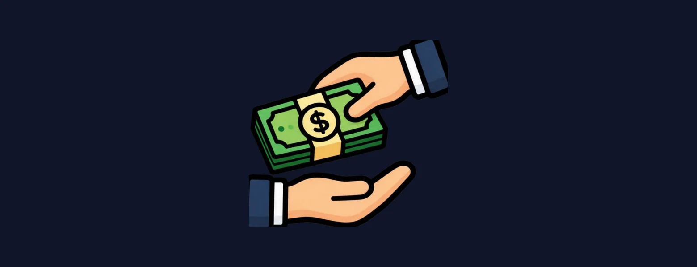

Three ways to
open a door
Everything here is free and stays free — which means it runs on the people who decide to help. Money, hours, or an institution's name.
One organization,
three open doors
Everything on this site is free, and that is a constraint we chose rather than an offer that expires. The families USUFU was built for are the ones who cannot pay a consultant several thousand dollars to explain a system that is, in the end, explainable. Keeping the price at zero is the whole point — so the cost has to be carried somewhere else.
A donation is the most direct way to carry it. We are small and our costs are small: the domain and the hosting that keep the site up, the practice materials we give away, and the translation of every new guide into Ukrainian. There is no salary line and no office.
Volunteering costs nothing but attention. Most of what we need is language and eyes: translating a guide, reading an essay draft and saying honestly what is unclear, checking a figure against its official source before it goes live, or telling one family in your city that this exists. An hour a month is a real contribution here.
The other thing we need is reach. USUFU was started by a few students in one state, and there are Ukrainian families in every part of this country whose schools we know nothing about. Standing as a representative where you already live — talking to your district, your local Ukrainian community, the counselling office at your own school — is the one kind of help nobody can send us from here.
Partnership is the newest of the three, and we will not overstate it: USUFU opens publicly in September 2026 and we are only beginning these conversations. We want strong partners on every subject the site covers, and the ones closest to a family matter most — a school, a district, or an organisation already serving Ukrainians that wants a Ukrainian-speaking education arm without having to build one. The door is open and it starts with an email.
Donate
Hosting, the domain, the free practice materials, and the translation of every guide into Ukrainian. Small costs — but they are exactly what keeps the site free for the families who need it most.
Support a Student
Volunteer
Translate a guide, read an essay draft honestly, check a figure against its source, or stand as our representative in your own district. Most of what we need is language, attention and reach — not money.
Help OthersPartner
Universities, schools, whole districts, foundations, and any organisation serving Ukrainians that would rather use a bilingual education arm than build one. Tell us what you have — or what your families keep asking — and we will tell you honestly where it fits.
Start a PartnershipEvery door opened stays open
for the next student
Nothing here is spent twice. A guide translated once is read by everyone who comes after it; a figure verified once stays verified for the next family that checks. Small help compounds here in a way it does not everywhere.
“Advancing Excellence. Ensuring Success.”
Reach Out Today